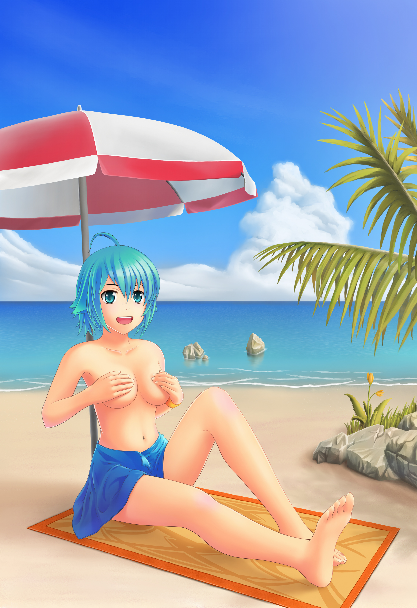
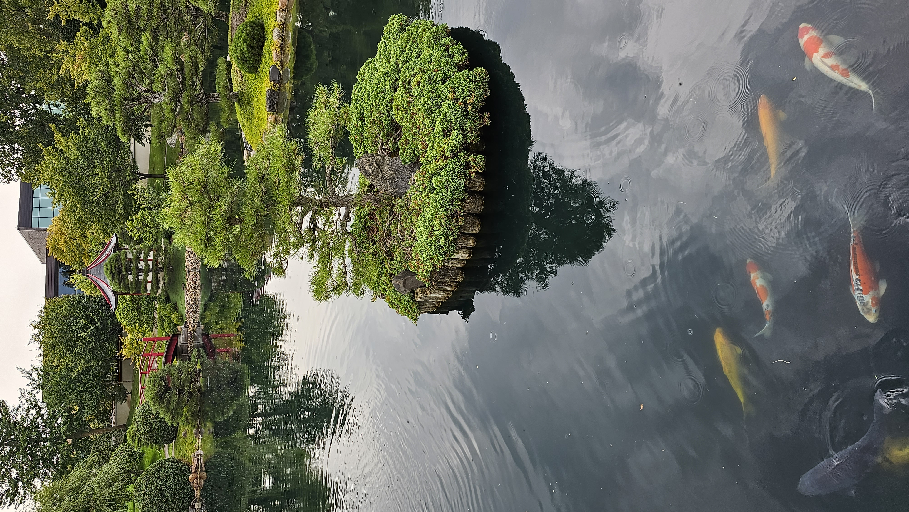
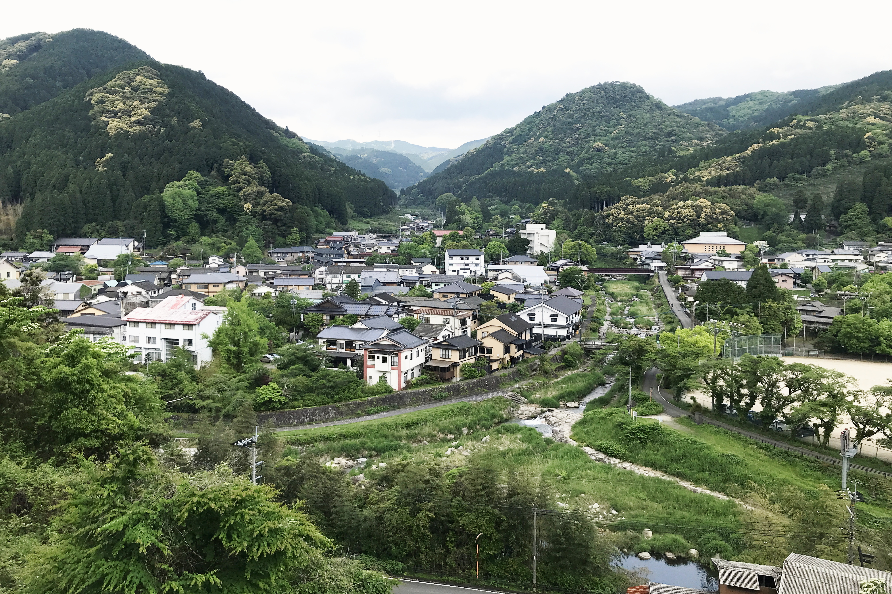

Japanese Anime Backgrounds 日式動漫背景素材
| 出品 | 日本 |
| 年代 | 2000s- |
| 原創作者 | 各開放創作者 |
| 原發行商 | Wikimedia Commons |
| 首次登場 | 2000 |
| 類型 | 背景 / 場景參考素材 |
| 版權狀態 | CC0 CC-BY-SA CC-BY CC0 / CC-BY / CC-BY-SA / 公版 自由授權 |
呢個品牌收錄日式風格背景/場景參考圖，供 AI 動畫製作做背景基底：
- 真·動漫風格場景：torii 鳥居+瀑布、Shinto 神社動漫風景（Niabot / Benlisquare）
- 日式城市景：秋葉原街道、神戶夜景、東京晴空塔
- 櫻花春景：富士山+櫻花、津輕鐵道穿櫻花、大阪造幣局
- 傳統建築：京都銀閣寺、日式庭園、日式花園
全部自由授權（CC0 / CC-BY / CC-BY-SA / 公版），可直接做動畫背景參考基底。
旗下公版角色 (13)

Akihabara StreetAkihabara Street
背景素材
CC0

Anime Beach SceneAnime Beach Scene
背景素材
CC-BY-SA

Fuji + SakuraFuji + Sakura
背景素材
CC-BY

Ginkaku-ji TempleGinkaku-ji Temple
背景素材
CC-BY-SA
Huntington Japanese GardenHuntington Japanese Garden
背景素材
CC-BY-SA

Japanese Garden with KoiJapanese Garden with Koi
背景素材
CC-BY
Kobe Night CityscapeKobe Night Cityscape
背景素材
CC-BY-SA

Sakura at Japan MintSakura at Japan Mint
背景素材
CC-BY-SA

Rail Through SakuraRail Through Sakura
背景素材
CC-BY-SA

Furuyu Saga CityscapeFuruyu Saga Cityscape
背景素材
CC-BY-SA

Shinto Shrine LandscapeShinto Shrine Landscape
背景素材
CC-BY-SA

Tokyo Skytree Worm-EyeTokyo Skytree Worm-Eye
背景素材
CC-BY-SA

On the EdgeOn the Edge
背景素材
CC-BY-SA